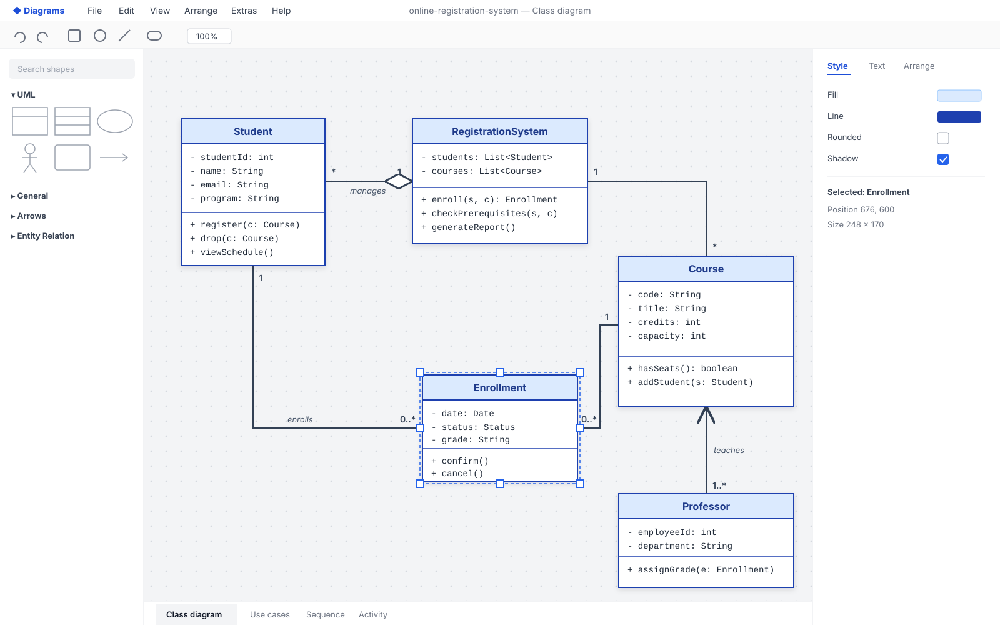
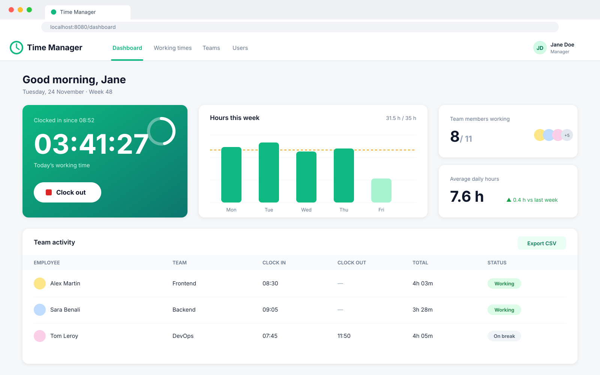

Cybersécurité
LogiSOC
Une interface PHP de visualisation des alertes de sécurité, développée pendant mon stage chez COMANAV / CMA CGM.
Une sélection de projets qui reflètent mes compétences, ma curiosité et ma passion pour la technologie.
Une interface PHP de visualisation des alertes de sécurité, développée pendant mon stage chez COMANAV / CMA CGM.

Une simulation de distributeur automatique en C, avec des opérations bancaires structurées et une interaction avec l'utilisateur.

Un jeu de combat en C++ construit autour de la programmation orientée objet et des interactions entre personnages.

Un système d'inscription universitaire modélisé en UML, conçu autour de l'analyse des besoins et de la modélisation du système.

Une application collaborative de gestion du temps pour gérer les utilisateurs, les heures de travail et les pointages.